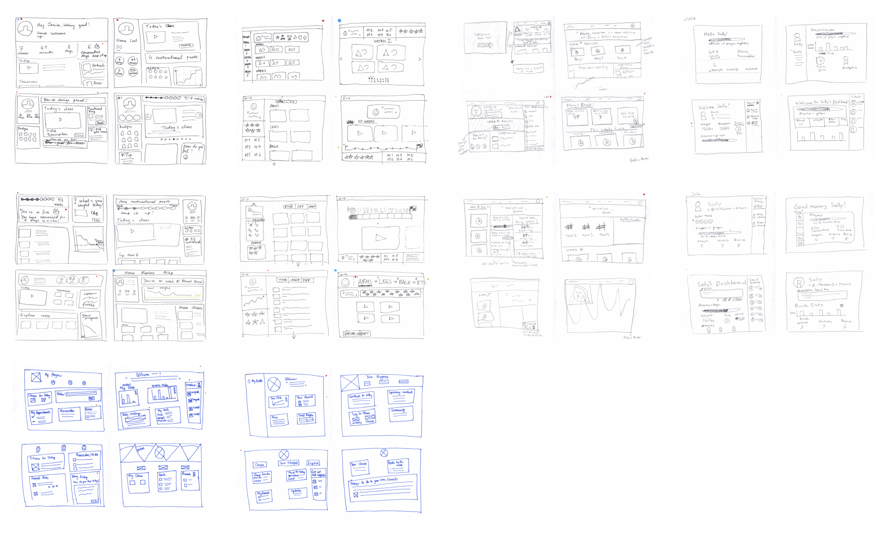
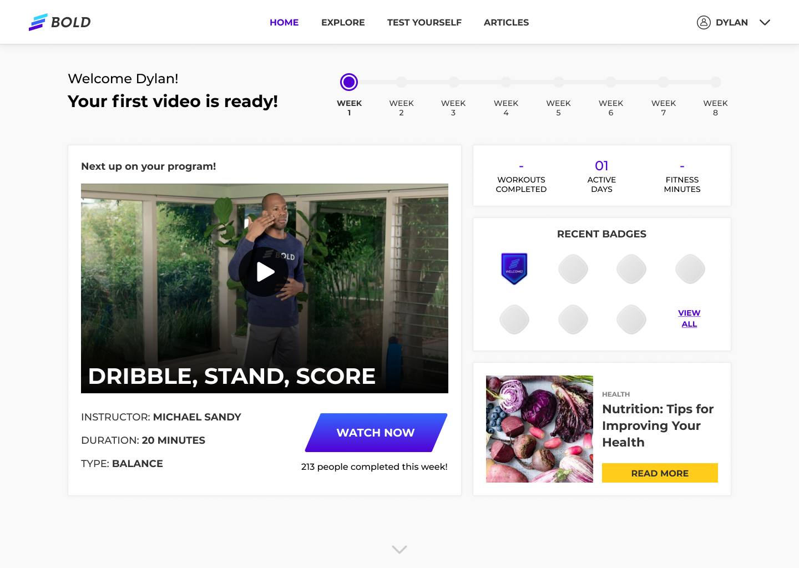
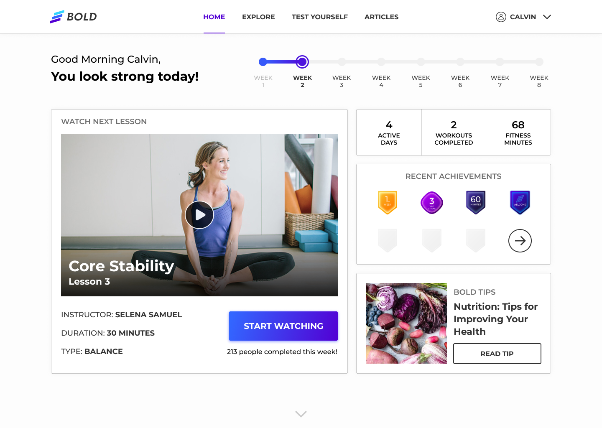

Design Details
Design Principles
After our research and user interviews, we created a list of design principles for this project. We sought to ensure that our research/interview insights would inform our design decisions, and to directly influence our end product.
Approachable
Most seniors have never used an online fitness program, some said they were uncomfortable with the concept. Therefor, the experience has to be approachable, friendly and welcoming.
Simple
A good portion of users aren’t familiar with online dashboards, most only having used Facebook or Yahoo. Having a simple and intuitive interface is paramount with this user group.
Personal
Many seniors mentioned appreciating the “personal touch” that working with trainers provided, having a personalized dashboard with personalized messages creates a sense of familiarity and relatability with the service.
Ideation & Dot Voting
With our Design Principles in place, we spent a day and did Crazy 8 sketches for ideation.
- We came up with 40 low-fidelity mockups for a fitness dashboard
- We reached out to our peers and voted on the best features of each design
- We met with the client for feedback on the viability of each design

Design Patterns We Prioritized:
Based on the feedback from our peers & the client, we proposed a minimal, swiss-grid to organize and contain the dashboard’s information. Synthesizing the research & feedback, we reached a consensus for what information was pertinent to the users & the business.
Next Up Video: A large video player that quickly captures their attention. This allows users to seamlessly continue their program with little friction.
Member View Counter: Social proof motivates other users to follow suit and join the fun!
Personalized Welcome Message: Welcomes the user to their personalized workout routine
Program Tracker: Visualization of workout program process, helps visually reinforce the end goal of finishing the programBadge
Gallery: Visualization of the user’s recent successes; shows them the recent badges they have collected – this positive reinforcement promotes users to continue with the program
Bold Tips: Seniors wanted to see more information regarding fitness, so we listened and added this function, they love it!
First Prototype

Concluding Validation Testing
With our first prototype, we went back into the field to perform more testing. To increase the diversity of our testing base, we performed tests at the Ferry Building instead of a senior-fitness class. Based on this usability testing, all users found the dashboard very intuitive and easy to navigate.
Second Prototype

Here’s what we addressed:
Synthesizing the testing results, we went back to work and made some changes to our prototype:
– We changed some copy to use terms they are more familiar with
– We altered some visuals to increase legibility
– We removed smaller visual elements they assumed they should be able to read, but didn’t need to
Some things we could do better:
Select usability participants at more locations
– Usability testing with a wider variety of copy
– Pushed to test prototype with current Bold users